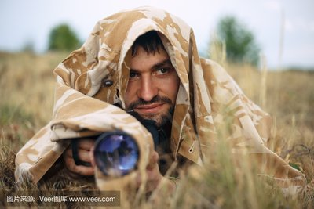
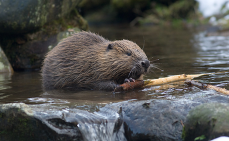

How to Take Sneak Shots of Wild Animals: Some Funny Knowledge
主页
冒犯式拍法
伏地魔拍法
间谍式拍法
夜间偷窥法
伏地魔拍法
当然了，要想“偷窥”野生动物，常用办法还是乖乖穿好迷彩服当“伏地魔”。

伪装起来的摄影师
道理很简单，动物一般应激性都很强，看见摄像机这种陌生的物体会迅速跑开，影响拍摄。

应激性很强的河狸
比如动物界的“土木建筑师”河狸，只要发现不对劲，全家都会跑到洞里躲起来。